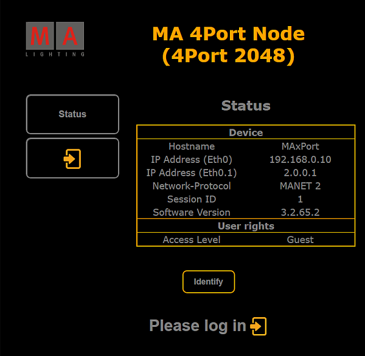
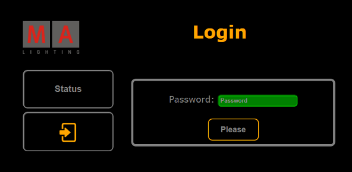
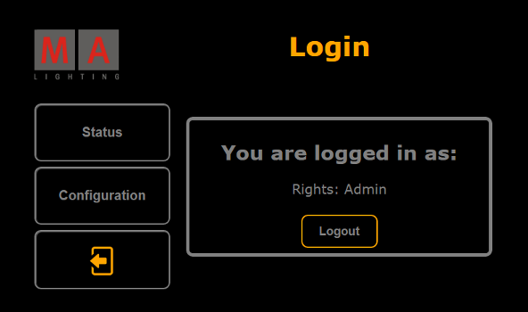
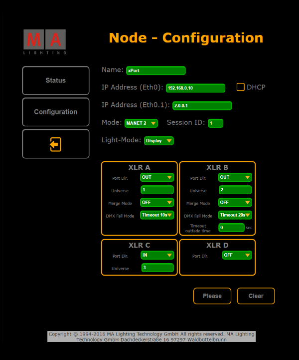

Connect the MA xPort Node directly to your PC using a network cable. Or connect the xPort Node with a network cable via an MA Network Switch or a network hub.
Change the IP address of your PC to the same IP address space of the node (the last block of the IP address has to differ from the node).
Important:
The IP address of the node is located on its display.
Type the IP address of the node into the address bar of the browser.
The status window opens.

Status window – Configuration of nodes in browser
Hint:
Also, see the status of the node on its display.
To light up the display of the node, click Identify – located below the status table – once.
The browser page turns green.
To turn off the illumination of the display, click Identify once again and the background of the browser page turns black again.
Next, log in:
-Click Please log in below the button Identify or click the button with the arrow pointing right below the button Status.
The login form opens.

Login form – Configuration of nodes in browser
Type admin into the password input mask and then click Please.
Hint:
To return to the status window, click the button Status on the left.
If you have successfully logged in, a window opens showing the login credentials.

Successful login – Configuration of nodes in browser
If you would like to leave this window, click Logout now.
To proceed, click Configuration.
The window Node - Configuration opens.

Node Configuration
Adjust the settings:
-Enter the name of the node, the two IP addresses and the ID of the session in the corresponding input fields.
-Select the mode and light mode in the corresponding drop-down menus.
-Check the checkbox DHCP.
For more information on DHCP see Using DHCP in MA devices.
Adjust the ports in XLR A, XLR B, XLR C, and XLR D:
-Select the port in the drop-down menu Port Dir.
For more information on the port and merge modes see Configure the DMX ports on MA devices – Port Mode and Configure the DMX ports on MA devices – Merge Mode.
-Enter the number of the universe.
-Then, select the merge mode in the drop-down menu Merge Mode.
-Select the DMX fail mode in the corresponding drop-down menu.
-And enter the timeout outfade time if necessary.
To apply the settings you have made, click Please.
Your settings have now been applied.
If you would like to reset the settings that have not been applied yet, click Clear.
You can now log out:
-Click the button with the arrow pointing to the left below the button Configuration.
Then, click Logout in the box.